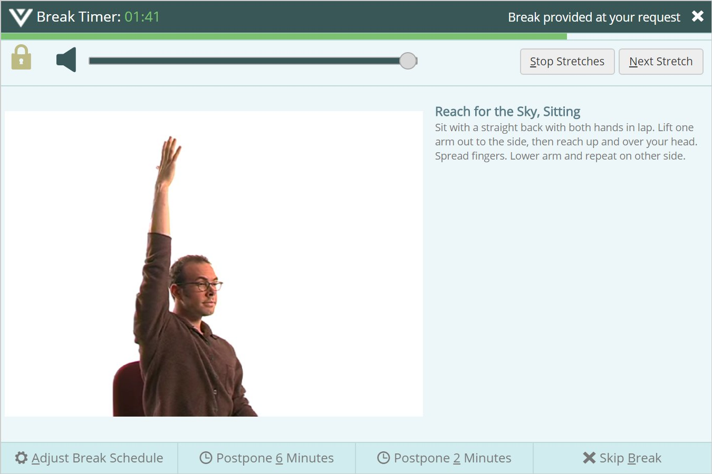
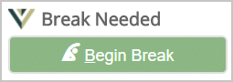

Many computer users find it difficult to remember to take rests, and work for hours without pauses. If you've ever left the computer with discomfort in your hands, neck, arms, fingers, eyes, or back, then, you probably need more breaks.
It's important to take breaks at appropriate times, such as after intense work sessions or long periods of straight typing and mousing.
By modeling your working patterns, BreakTimer reminds you to take breaks when:
When it's time to take a break, RSIGuard shows you the Break Timer window. Do the demonstrated stretches to relax your muscles and improve your circulation, or just get up and walk around!
|
 |
Sample BreakTimer Stretches |
If you can't take a break when it's suggested, you can use Postpone or Skip Break buttons as necessary.
If BreakTimer is feeling too intrusive, you can tell it not to interrupt you during certain hours, while certain programs are in use, or for the next few minutes or hours. If your job never allows you to be interrupted, select "polite mode" in the Setup Wizard. In this mode, RSIGuard indicates that a break is needed by presenting a

button. The break won't start until you click it.
View Detailed BreakTimer User Documentation